\(k\)-means Clustering#
import os
import sys
module_path = os.path.abspath(os.pardir)
if module_path not in sys.path:
sys.path.append(module_path)
# Required packages for today
from sklearn.cluster import KMeans
from sklearn import metrics
from sklearn import datasets
# Familiar packages for plotting, data manipulation, and numeric functions
import matplotlib.pyplot as plt
import pandas as pd
import numpy as np
# import Alison's code for the demo clusters
from src.demo_images import *
# Have plots appear in notebook
%matplotlib inline
# Default plot params
plt.style.use('seaborn')
cmap = 'tab10'
Learning Goals#
SWBAT:
Assess what scenarios could use \(k\)-means
Articulate the methodology used by \(k\)-means
Apply KMeans from sklearn.cluster to a relevant dataset
Select the appropriate number of clusters using the elbow method and Silhouette Scores
Evaluate the weaknesses and remedies to \(k\)-means
Scenario#
You work for the marketing department within a large company that manages a customer base. For each customer you have a record of average purchase cost and time since last purchase.
You know that if you want to retain your customers you cannot treat them the same. You can use targeted marketing ads towards groups that demonstrate different behavior, but how will you divide the customers into groups?
Part 1: Concept introduction#
Import libraries and download dataset#
We are continuing to use Scikit Learn as our main library. The specific documentation for k-means can be found here.
Clustering! Finding GROUPS#
How many groups do you see?
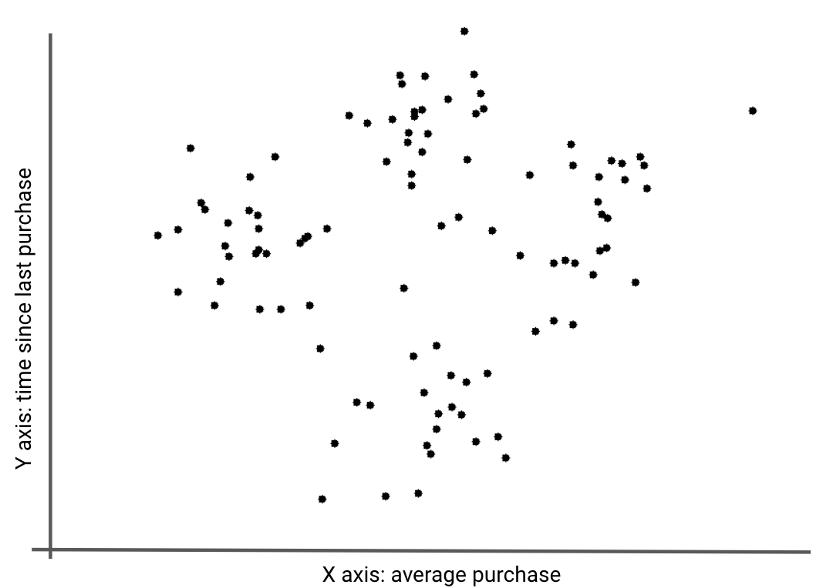
Wait - How is clustering different from classification?#
In classification you know what groups are in the dataset and the goal is to predict class membership accurately.
In clustering you do not know which groups are in the dataset and you are trying to identify the groups.
So what do you do with clustering results?#
Clustering is often an informing step in your analysis. Once clusters are identified, one can:
Create strategies on how to approach each group differently
Use cluster membership as an independent variable in a predictive model
Use the clusters as the target label in future classification models. How would you assign new data to the existing clusters?
Explore the algorithm with an intuitive K means approach#
Observe the following four methods with a sample dataset:#
Method Questions:#
What do they have in common?
What are the differences between them?
How many groups are there in the end?
Do you see any problems with this method?
Method 1#

Method 2#
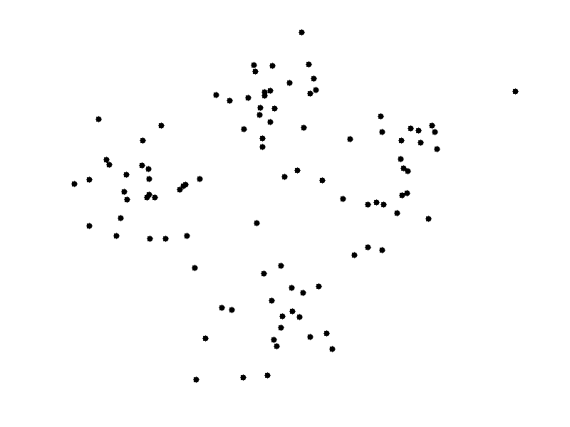
Method 3#
Method 4#
Review Method Questions:#
What do they have in common?
What are the differences between them?
How many groups are there in the end?
Do you see any problems with this method?
In common:
Green dots starts at points
Calculates distance
Moves dots
Re-measures distance
Moves dots as needed
Differences:
Dots start in different places and groups settle in different places
Groups:
There are four groups
Problem with this method?
Too variable!
K-means algorithm, at its core, in an optimization function#
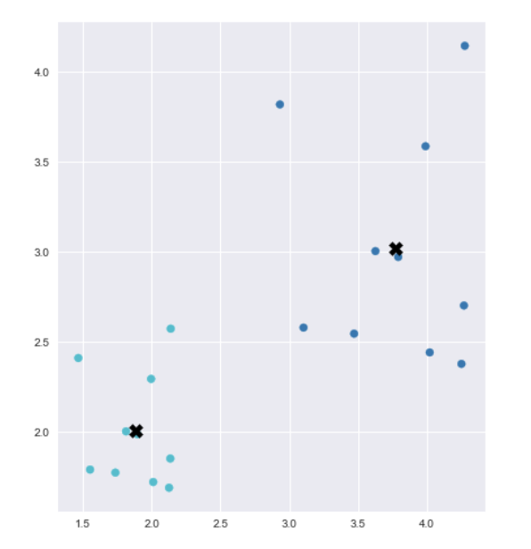
Reassigns groups and adjusts centroids to…#
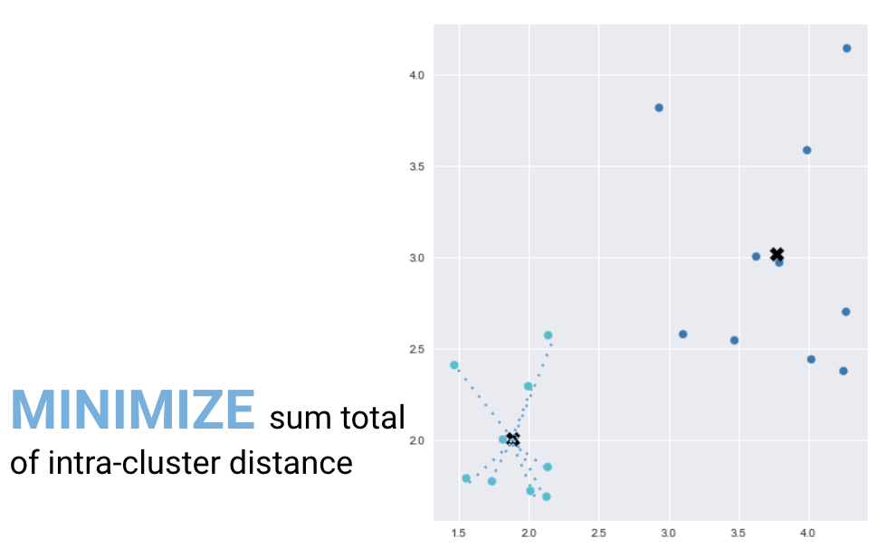
And to…#
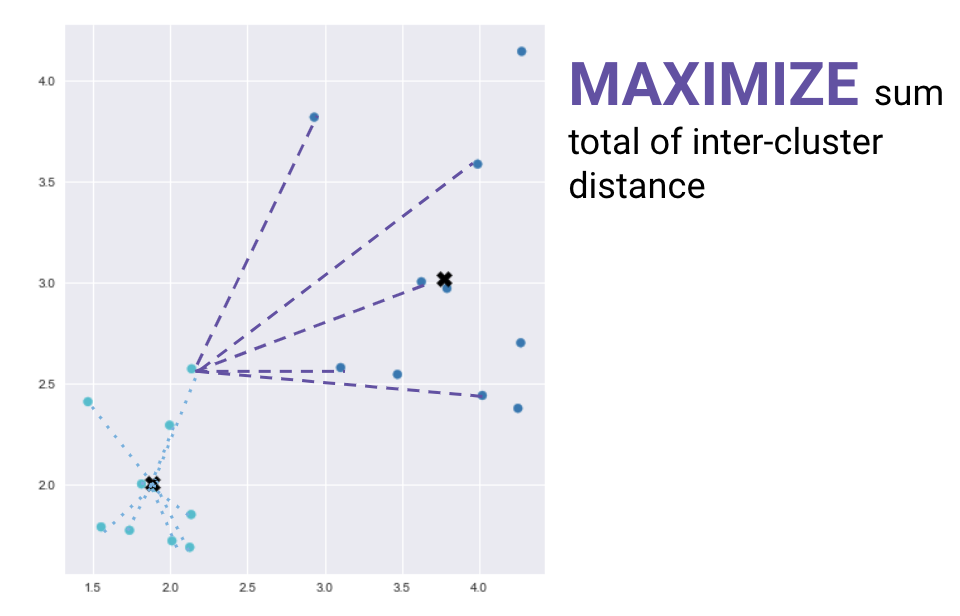
Sci-kit Learn documentation actually has some pretty good documentation describing the algorithm if you wish for more detail.
\(k\)-Means Plotter#
from src.k_means_plotter import k_means
from sklearn.datasets import make_blobs
X, Y = make_blobs(centers=3)
X[:5, :]
array([[ 4.10544352, -4.3372255 ],
[ 0.50345597, -2.68326289],
[-6.34452989, -5.77890806],
[ 4.03358594, -3.22043207],
[-5.04793731, -5.50624372]])
fig, ax = plt.subplots()
ax.scatter(X[:, 0], X[:, 1]);
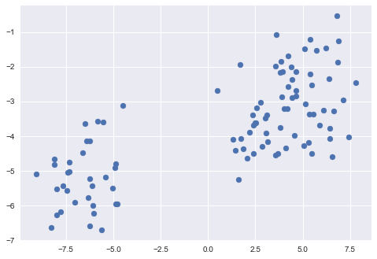
np.random.seed(1)
df = k_means(X[:, 0], X[:, 1], k=3)
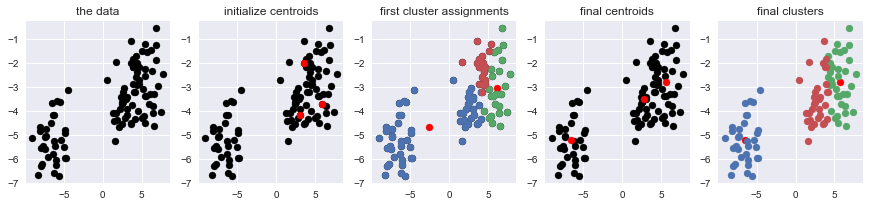
np.random.seed(42)
df = k_means(X[:, 0], X[:, 1], k=3)
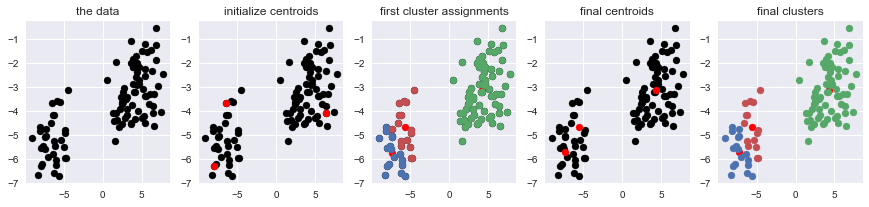
np.random.seed(2)
df = k_means(X[:, 0], X[:, 1], k=3)
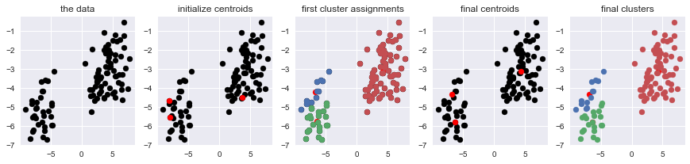
np.random.seed(1)
df = k_means(X[:, 0], X[:, 1], k=2)
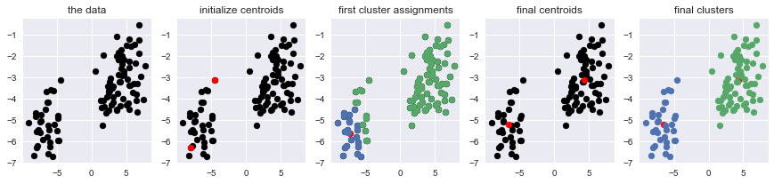
Data for the exercise#
This is a sample dataset.
Let us assume the data is already scaled.
dummy_dat = pd.read_csv("../data/xclara.txt",
header=0,
index_col=0)
dummy_dat.reset_index(inplace=True)
dummy_dat.drop('index', axis=1, inplace=True)
dummy_dat.head()
| V1 | V2 | |
|---|---|---|
| 0 | 2.072345 | -3.241693 |
| 1 | 17.936710 | 15.784810 |
| 2 | 1.083576 | 7.319176 |
| 3 | 11.120670 | 14.406780 |
| 4 | 23.711550 | 2.557729 |
dummy_dat.tail()
| V1 | V2 | |
|---|---|---|
| 2995 | 85.65280 | -6.461061 |
| 2996 | 82.77088 | -2.373299 |
| 2997 | 64.46532 | -10.501360 |
| 2998 | 90.72282 | -12.255840 |
| 2999 | 64.87976 | -24.877310 |
EDA of variables#
dummy_dat.describe()
| V1 | V2 | |
|---|---|---|
| count | 3000.000000 | 3000.000000 |
| mean | 40.611358 | 22.862141 |
| std | 25.859054 | 31.759714 |
| min | -22.495990 | -38.795500 |
| 25% | 18.462790 | -4.003494 |
| 50% | 41.552210 | 13.827390 |
| 75% | 62.249480 | 55.729100 |
| max | 104.376600 | 87.313700 |
fig, ax = plt.subplots()
ax.scatter(dummy_dat['V1'], dummy_dat['V2']);
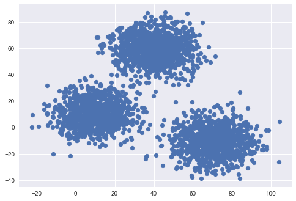
Introduction of Kmeans#
model = KMeans(n_clusters=3).fit(dummy_dat)
Notice the init and n_init parameters!
model.cluster_centers_
array([[ 40.68362784, 59.71589274],
[ 9.4780459 , 10.686052 ],
[ 69.92418447, -10.11964119]])
fig, ax = plt.subplots()
ax.scatter(dummy_dat['V1'], dummy_dat['V2'])
for i in range(len(model.cluster_centers_)):
ax.scatter(model.cluster_centers_[i][0],
model.cluster_centers_[i][1]);
model.predict([[60, -20]])
array([2], dtype=int32)
fig, ax = plt.subplots()
ax.scatter(dummy_dat['V1'], dummy_dat['V2'],
c='#f30303');
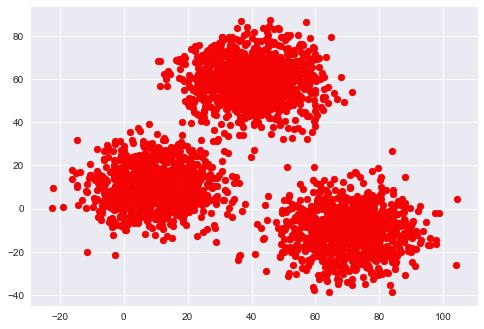
fig, ax = plt.subplots()
ax.scatter(dummy_dat['V1'], dummy_dat['V2'],
c=model.labels_);
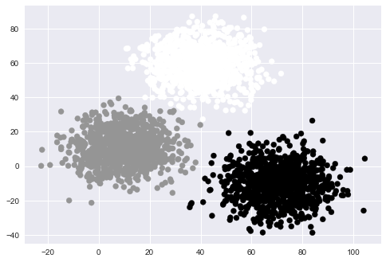
labeled_df = pd.concat([dummy_dat, pd.DataFrame(model.labels_,
columns=['cluster'])], axis=1)
labeled_df.head()
| V1 | V2 | cluster | |
|---|---|---|---|
| 0 | 2.072345 | -3.241693 | 1 |
| 1 | 17.936710 | 15.784810 | 1 |
| 2 | 1.083576 | 7.319176 | 1 |
| 3 | 11.120670 | 14.406780 | 1 |
| 4 | 23.711550 | 2.557729 | 1 |
cluster0 = labeled_df[labeled_df['cluster'] == 0]
cluster1 = labeled_df[labeled_df['cluster'] == 1]
cluster2 = labeled_df[labeled_df['cluster'] == 2]
cluster0['V1'].head()
29 24.29990
326 37.48364
900 48.19050
901 48.32863
902 31.44145
Name: V1, dtype: float64
fig, ax = plt.subplots()
ax.scatter(cluster0['V1'], cluster0['V2'], c='k', alpha=0.4)
ax.scatter(cluster1['V1'], cluster1['V2'], c='c', alpha=0.4)
ax.scatter(cluster2['V1'], cluster2['V2'], c='r', alpha=0.4);
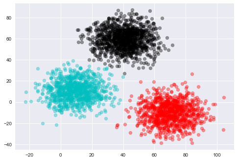
Note#
You may have different cluster centers.#
We saw in the demo that the algorithm is sensitive to starting points.
Even if we set n_init to a significant value, it’s still a good idea to use random_state to ensure repeatable results.
model_setseed = KMeans(n_clusters=3, random_state=10).fit(dummy_dat)
model_setseed.cluster_centers_
array([[ 40.68362784, 59.71589274],
[ 69.92418447, -10.11964119],
[ 9.4780459 , 10.686052 ]])
Exercise:#
Try running
Kmeanswith different numbers ofn_clusters, \(k=2\) through \(k=4\)Check the
cluster_centers_.
#Practice code goes here
Part 2: Choosing the appropriate number of \(k\)#
Two metrics we can use: elbow method and the silhouette coefficient#
Part 2A: Elbow Method#
Elbow method uses the sum of squared error calculated from each instance of \(k\) to find the best value of \(k\).
This is sometimes called the “inertia” of the model, and fitted sklearn \(k\)-means models have an inertia_ attribute.
Sometimes you will see the SSE divided by the total sum of squares in the dataset (how far is each point from the center of the entire dataset)
Fewer clusters seems better, but inertia will always decrease with more clusters. Hence the idea of looking for an elbow in the plot of inertia vs. \(k\).
model.inertia_
611605.8806933895
Inertia is the sum of squared distances between points and their cluster center.
# Specifying the dataset and initializing variables
X = dummy_dat
distortions = []
# Calculate SSE for different K
for k in range(2, 10):
kmeans = KMeans(n_clusters=k, random_state=301)
kmeans.fit(X)
distortions.append(kmeans.inertia_)
# Plot values of SSE
fig, ax = plt.subplots(figsize=(10, 8))
ax.set_title('Elbow curve')
ax.set_xlabel('k')
ax.plot(range(2, 10), distortions)
ax.grid(True)
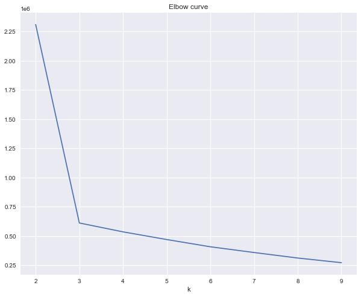
Part 2B: Silhouette Coefficient#
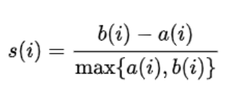
a refers to the average distance between a point and all other points in that cluster.
b refers to the average distance between that same point and all other points in clusters to which it does not belong
It is calculated for each point in the dataset, then averaged across all points for one cumulative score.
The Silhouette Coefficient ranges between -1 and 1. The closer to 1, the more clearly defined are the clusters. The closer to -1, the more incorrect assignment.
Suppose:
I have four points in a one-dimensional space: 0, 1, 9, and 10; and
I put them into two clusters: {0, 1} and {9, 10}.
Then we would calculate the Silhouette Score as follows:
For Point 0:
\(a=1\)
\(b=9.5\)
\(s(0) = \frac{9.5 - 1}{9.5} = \frac{17}{19}\)
For Point 1:
\(a=1\)
\(b=8.5\)
\(s(1) = \frac{8.5 - 1}{8.5} = \frac{15}{17}\)
For Point 9:
\(a=1\)
\(b=8.5\)
\(s(9) = \frac{8.5 - 1}{8.5} = \frac{15}{17}\)
For Point 10:
\(a=1\)
\(b=9.5\)
\(s(10) = \frac{9.5 - 1}{9.5} = \frac{17}{19}\)
The full Silhouette Score would be the average of all of these individual scores:
\(\large s = \frac{2\left(\frac{17}{19}\right) + 2\left(\frac{15}{17}\right)}{4}\)
(2 * 17/19 + 2 * 15/17) / 4
0.8885448916408669
metrics.silhouette_score(np.array([0, 1, 9, 10]).reshape(-1, 1), ['red', 'red', 'blue', 'blue'])
0.8885448916408669
# Generate silhouette coefficient for each k
X = dummy_dat
silhouette_plot = []
for k in range(2, 10):
clusters = KMeans(n_clusters=k, random_state=10)
cluster_labels = clusters.fit_predict(X)
silhouette_avg = metrics.silhouette_score(X, cluster_labels)
silhouette_plot.append(silhouette_avg)
# Plot Silhouette coefficient
fig, ax = plt.subplots(figsize=(10, 8))
ax.set_title('Silhouette coefficients over k')
ax.set_xlabel('k')
ax.set_ylabel('silhouette coefficient')
ax.plot(range(2, 10), silhouette_plot)
ax.axhline(y=np.mean(silhouette_plot), color="red", linestyle="--")
ax.grid(True)
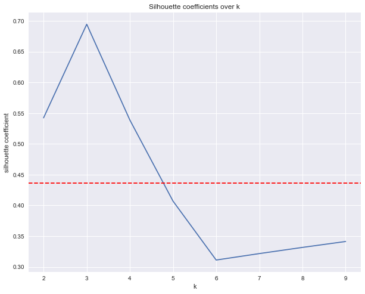
Part 3: Assumptions and challenges of \(k\)-means#
Demonstrate the ideal \(k\)-means dataset
Show three scenarios where \(k\)-means struggles
Ideal \(k\)-means scenario#
ideal()
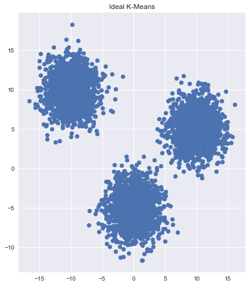
Meets all assumptions:#
Independent variables
Balanced cluster sizes
Clusters have similar density
Spherical clusters/equal variance of variables
Problem Scenario 1 - classes not all round#
messyOne()
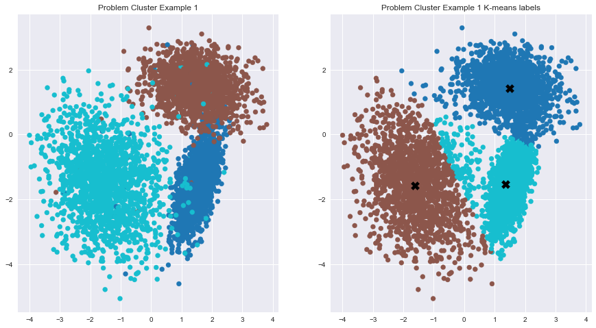
Problem Scenario 2 - imbalanced class size#
messyTwo()
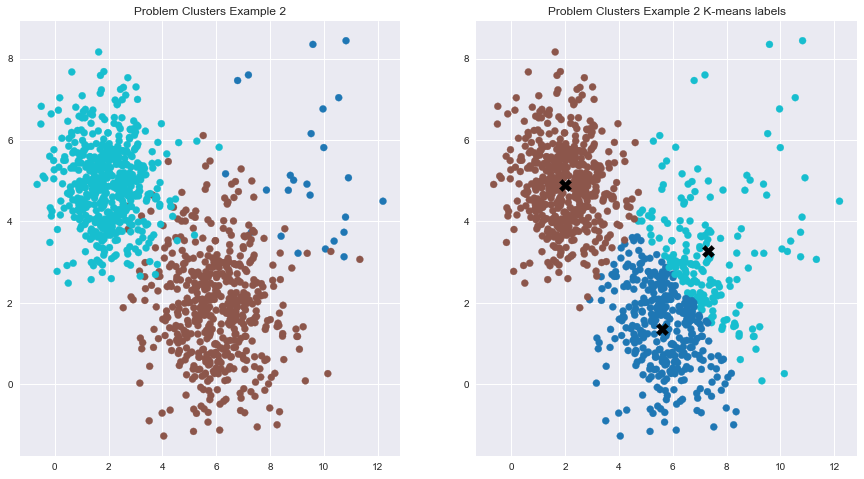
Problem Scenario 3 - class size and density#
messyThree()
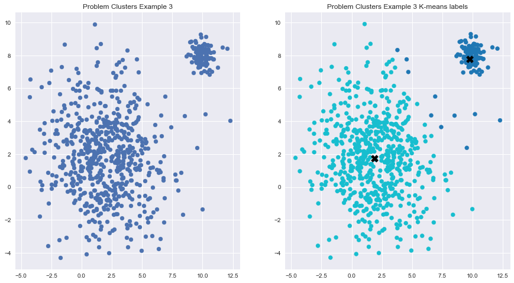
Solution to challenges:#
Preprocessing: PCA or scaling
Try a different clustering methods
Exercise:#
\(k\)-means on larger dataset - Wine subscription#
You want to run a wine subscription service, but you have no idea about wine tasting notes. You are a person of science. You have a wine dataset of scientific measurements. If you know a customer likes a certain wine in the dataset, can you recommend other wines to the customer in the same cluster?
Questions:#
How many clusters are in the wine dataset?
What are the characteristics of each clusters?
What problems do you see potentially in the data?
the dataset is Wine.csv
Instructions:
First, remove customer_segment from the dataset
# Work on problem here: Would scaling make a difference?
wine = pd.read_csv('../data/Wine.csv')
wine.drop(columns=['Customer_Segment'], inplace=True)
wine.head()
| Alcohol | Malic_Acid | Ash | Ash_Alcanity | Magnesium | Total_Phenols | Flavanoids | Nonflavanoid_Phenols | Proanthocyanins | Color_Intensity | Hue | OD280 | Proline | |
|---|---|---|---|---|---|---|---|---|---|---|---|---|---|
| 0 | 14.23 | 1.71 | 2.43 | 15.6 | 127 | 2.80 | 3.06 | 0.28 | 2.29 | 5.64 | 1.04 | 3.92 | 1065 |
| 1 | 13.20 | 1.78 | 2.14 | 11.2 | 100 | 2.65 | 2.76 | 0.26 | 1.28 | 4.38 | 1.05 | 3.40 | 1050 |
| 2 | 13.16 | 2.36 | 2.67 | 18.6 | 101 | 2.80 | 3.24 | 0.30 | 2.81 | 5.68 | 1.03 | 3.17 | 1185 |
| 3 | 14.37 | 1.95 | 2.50 | 16.8 | 113 | 3.85 | 3.49 | 0.24 | 2.18 | 7.80 | 0.86 | 3.45 | 1480 |
| 4 | 13.24 | 2.59 | 2.87 | 21.0 | 118 | 2.80 | 2.69 | 0.39 | 1.82 | 4.32 | 1.04 | 2.93 | 735 |
Review \(k\)-means steps#
Look at and clean data (if needed)
Scale data
Try various values of \(k\)
Plot SSE and Silhouette coefficient to find best \(k\)
Describe the characteristics of each cluster using their centroids
How many clusters fit the data?#
What can you tell me about them?
According to the Elbow Method, our best choice here is 3 clusters.
One last example#
Using online retail data data from UCI database.
You are looking for patterns so you can get people to buy more, more frequently. You might have to create some new variables.
shopping = pd.read_excel('../data/Online Retail.xlsx')
shopping.tail(20)
| InvoiceNo | StockCode | Description | Quantity | InvoiceDate | UnitPrice | CustomerID | Country | |
|---|---|---|---|---|---|---|---|---|
| 541889 | 581585 | 22466 | FAIRY TALE COTTAGE NIGHT LIGHT | 12 | 2011-12-09 12:31:00 | 1.95 | 15804.0 | United Kingdom |
| 541890 | 581586 | 22061 | LARGE CAKE STAND HANGING STRAWBERY | 8 | 2011-12-09 12:49:00 | 2.95 | 13113.0 | United Kingdom |
| 541891 | 581586 | 23275 | SET OF 3 HANGING OWLS OLLIE BEAK | 24 | 2011-12-09 12:49:00 | 1.25 | 13113.0 | United Kingdom |
| 541892 | 581586 | 21217 | RED RETROSPOT ROUND CAKE TINS | 24 | 2011-12-09 12:49:00 | 8.95 | 13113.0 | United Kingdom |
| 541893 | 581586 | 20685 | DOORMAT RED RETROSPOT | 10 | 2011-12-09 12:49:00 | 7.08 | 13113.0 | United Kingdom |
| 541894 | 581587 | 22631 | CIRCUS PARADE LUNCH BOX | 12 | 2011-12-09 12:50:00 | 1.95 | 12680.0 | France |
| 541895 | 581587 | 22556 | PLASTERS IN TIN CIRCUS PARADE | 12 | 2011-12-09 12:50:00 | 1.65 | 12680.0 | France |
| 541896 | 581587 | 22555 | PLASTERS IN TIN STRONGMAN | 12 | 2011-12-09 12:50:00 | 1.65 | 12680.0 | France |
| 541897 | 581587 | 22728 | ALARM CLOCK BAKELIKE PINK | 4 | 2011-12-09 12:50:00 | 3.75 | 12680.0 | France |
| 541898 | 581587 | 22727 | ALARM CLOCK BAKELIKE RED | 4 | 2011-12-09 12:50:00 | 3.75 | 12680.0 | France |
| 541899 | 581587 | 22726 | ALARM CLOCK BAKELIKE GREEN | 4 | 2011-12-09 12:50:00 | 3.75 | 12680.0 | France |
| 541900 | 581587 | 22730 | ALARM CLOCK BAKELIKE IVORY | 4 | 2011-12-09 12:50:00 | 3.75 | 12680.0 | France |
| 541901 | 581587 | 22367 | CHILDRENS APRON SPACEBOY DESIGN | 8 | 2011-12-09 12:50:00 | 1.95 | 12680.0 | France |
| 541902 | 581587 | 22629 | SPACEBOY LUNCH BOX | 12 | 2011-12-09 12:50:00 | 1.95 | 12680.0 | France |
| 541903 | 581587 | 23256 | CHILDRENS CUTLERY SPACEBOY | 4 | 2011-12-09 12:50:00 | 4.15 | 12680.0 | France |
| 541904 | 581587 | 22613 | PACK OF 20 SPACEBOY NAPKINS | 12 | 2011-12-09 12:50:00 | 0.85 | 12680.0 | France |
| 541905 | 581587 | 22899 | CHILDREN'S APRON DOLLY GIRL | 6 | 2011-12-09 12:50:00 | 2.10 | 12680.0 | France |
| 541906 | 581587 | 23254 | CHILDRENS CUTLERY DOLLY GIRL | 4 | 2011-12-09 12:50:00 | 4.15 | 12680.0 | France |
| 541907 | 581587 | 23255 | CHILDRENS CUTLERY CIRCUS PARADE | 4 | 2011-12-09 12:50:00 | 4.15 | 12680.0 | France |
| 541908 | 581587 | 22138 | BAKING SET 9 PIECE RETROSPOT | 3 | 2011-12-09 12:50:00 | 4.95 | 12680.0 | France |